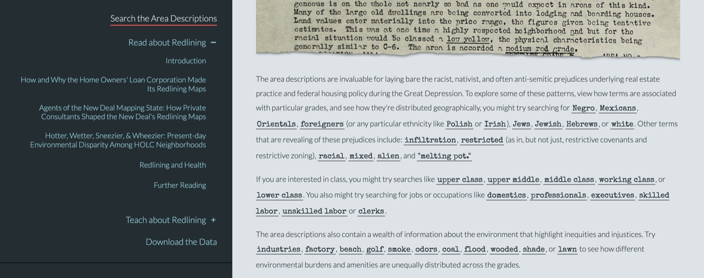
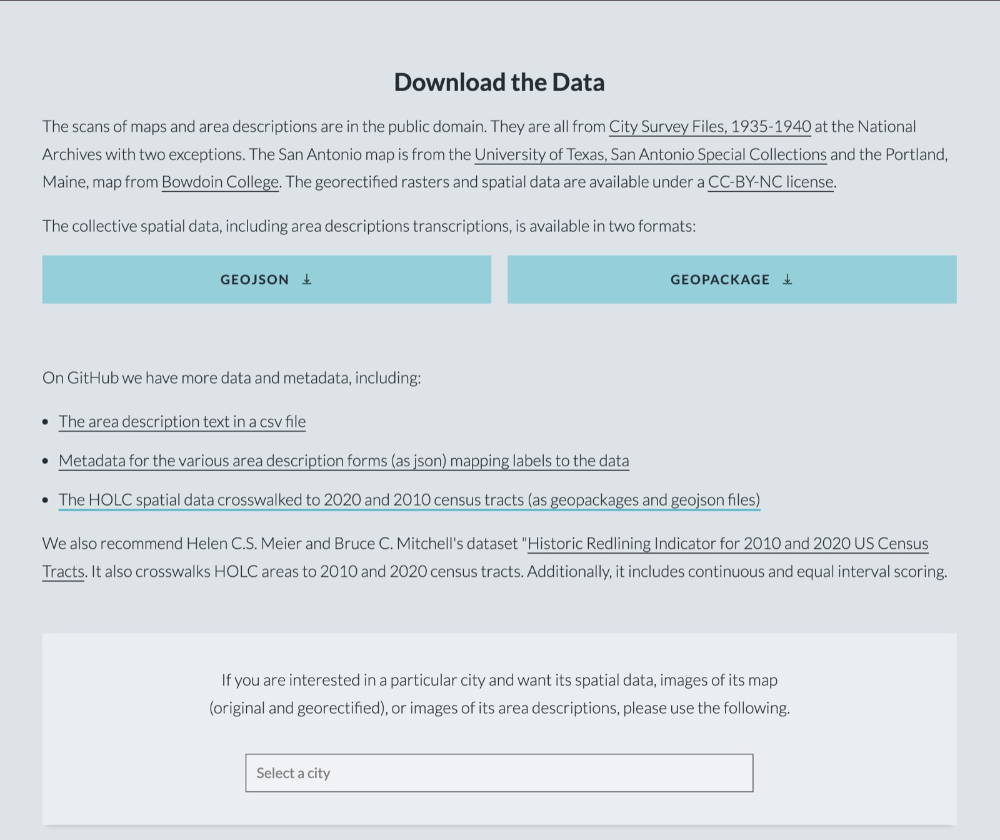
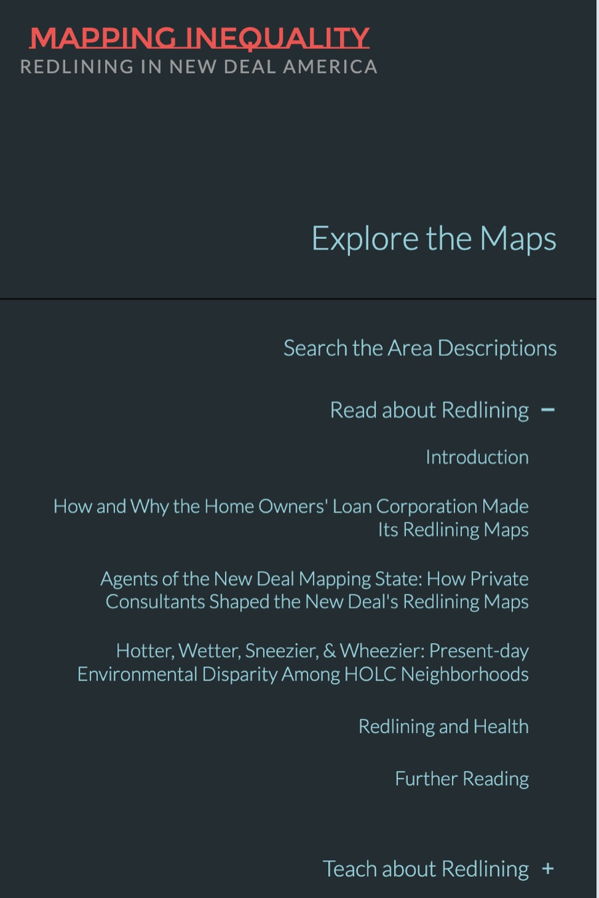

Digital History Review
Mapping Inequality: Redlining in New Deal America
Introduction¶
The project I am reviewing is "Mapping Inequality: Redlining in New Deal America." It is an interactive website created by professors from multiple universities, including the University of Richmond, Virginia Tech, the University of Maryland, and Johns Hopkins University. The creators have collected thousands of surveys conducted by the Home Owners' Loan Corporation (HOLC) about "residential security." These surveys were conducted from 1935 to 1940 and were used by banks to decide whether to give residents of neighborhoods home loans. The website analyzes this data in numerous forms. The main visual piece is a digitized and georeferenced map that allows the user to click into different cities and neighborhoods and examine how they were rated and the reasons behind the ratings. The website also has extensive written sections that discuss the motivations behind redlining, how the creation of the maps was prejudiced, and the lasting impacts of that prejudice today. Overall, this website achieves an incredible synthesis of data and turns it into a large and strong analysis; however, I believe that the organization and prioritization of certain arguments could be improved.
Argument and Interpretation¶
The authors of this website make three main arguments. The first is that the area descriptions on the maps were heavily prejudiced, treating the presence of people of color as making an area less desirable for living and for loans. The second is that the maps were made by consulting "local map experts" who turned out to be realtors, appraisers, and bankers who molded the maps to fit their agendas for the city. The third is that there are overarching health and environmental concerns associated with redlined neighborhoods.
The authors are very forthright in their first argument that the maps and area descriptions disfavored the presence of people of color in neighborhoods. There is a section of the website where you can search phrases, and the authors list phrases that provide evidence of prejudice regarding race, class, and the environmental features of the neighborhoods that influenced the grades. The authors do not frame this as interpretation but as fact. This is a strong stance to take, but there is a massive amount of data to back up their claims.
The authors' second and third arguments come in the form of essays that can be accessed through the menu. The first essay argues that private consultants played a major part in the creation of most of the maps. The authors make this argument by drawing on archived documents that detail whom the Federal Home Loan Bank Board (FHLBB) worked with to create each of the maps. They then identify the professions of these consultants, revealing that 57% were in the real estate industry, 26% in the banking industry, and 6% in the appraisal industry. The authors also use quotes from powerful map consultants in Minneapolis and Los Angeles that imply the maps were used to fit their vision for city development. Their stance is firm: the maps were not the product of federal bureaucrats but of a collaboration with the real estate industry.
The third argument comes in the form of two essays. The first argues that lower-graded neighborhoods are more likely to contain industrial manufacturing and lack a presence of nature, while higher-graded neighborhoods contain an abundance of shade. The authors claim that the makeup of poor and rich neighborhoods was designed through urban planning and redlining. The second essay builds on this work by comparing the health of residents in redlined neighborhoods to national averages. The redlined neighborhoods have worse health indicators than both national averages and higher-rated neighborhoods. The authors do not claim a direct causal link but provide a possible explanation: the hazardous substances coming from manufacturing developments in low-rated neighborhoods could be contributing to the negative health outcomes.
Overall, I think that this website makes very strong arguments that are interesting to explore. The authors only make claims where there is ample evidence and list very specific cases to back up each claim. The logic the authors use is reasonable and complete, which strengthens the validity of the website.


Data and Evidence¶
This website does a great job of taking a massive amount of data and transforming it into a consumable product that presents well-supported arguments. The underlying dataset consists of HOLC maps, area descriptions filled out by local appraisers, and city-level documents. The maps have been scanned and georeferenced onto the interactive map. The area descriptions add context to the maps and explain why a certain area received its rating. The process by which the creators transformed the data is documented, and links to download the data are included on the website. Many journalists and researchers have reused this dataset.
The dataset does not include every American city, but it does include a large number of them. I believe that this can actually hurt the site, as the number of cities presented on the map can come across as overwhelming. However, the purpose of the website is to create a visualization of all of the data the creators have collected. Making the map easily consumable is not necessarily a requirement, as the essays present the findings and arguments the authors draw from the data. The search feature is also helpful, as it allows the user to examine a specific aspect of the data without having to scour the map for it. Overall, this dataset is abundant and a credible source of evidence for the claims the authors are making.

Organization and Design¶
I think that this website could do a better job of organizing its elements. Given that the dataset is massive and that the map has hundreds of cities plotted with unique data, it is unrealistic to assume that all viewers will look through all of the data and identify the racial prejudice within the documents. The website attempts to address this with essays that give in-depth analysis of the data and make arguments about what it implies. The essays, however, are not prioritized on the website. The crucial points that the authors make are buried in a "Read about Redlining" section, which is listed as a subsection of the menu. The creators clearly want visitors to see the map, as the button to navigate to it is at the top of the menu and is the largest option. I think that this was a poor design choice, as it directs viewers away from the sections that make sense of this massive visualization of data. I do think that the search section is effective, as it advises viewers on what to search for if they want to find evidence of racial prejudice in the creation of the maps.
Another thing that I would have liked to see on this website is more holistic analysis through charts. I found one set of charts related to prejudice in the maps, and it was buried in one of the essays. Given that this dataset is so large, I feel it is necessary to show overarching charts that give viewers a sense of what they are seeing in each of the maps. While there are bar charts that summarize the makeup of population and area grades within cities, they do not speak to the bias within these maps. Without these charts, the viewer is forced either to read through the essays or to click through multiple individual cities and draw their own conclusions. Overall, I think that the visualization created from this data is fantastic, but the website as a whole could do a better job of promoting the findings drawn from that data.

Communication and Audience¶
To me, this website feels like it is meant for multiple types of people. Historians, students, teachers, journalists, and policymakers could all benefit from the information presented on this website. The explanations are clear, and they do not assume any prior knowledge about redlining. The essays may be a little challenging for a general audience but are still manageable for most readers. The arguments are clearly made but not prioritized on the website; this is a design problem, however, and not a communication issue. The essays are very well put together and use reliable data to back up their claims. Overall, this website provides in-depth analysis of the data and presents multiple arguments. Viewers can go as deep as they would like without being forced in any direction, which makes the site accessible to multiple audiences.
Conclusion¶
Mapping Inequality makes strong claims about the racial prejudice that shaped the surveys conducted by the Home Owners' Loan Corporation, which eventually set the basis for redlining. The authors also make claims about the influence of the real estate industry in the making of the maps and the lasting impacts of those decisions. The website itself deals with a massive amount of data, which is impressively visualized on an interactive map. I think that this site offers great insights into the data presented in the map but fails to make them a priority for the viewer. Many viewers of this site would not come away understanding the claims being argued by looking only at the interactive map. Yet the site prioritizes the map and fails to properly deliver the findings from the data. I would suggest that the authors revise the site's navigation to better encourage viewers to examine the in-depth arguments being made.
Works Cited¶
Nelson, Robert K., LaDale Winling, Richard Marciano, Nathan Connolly, et al. Mapping Inequality: Redlining in New Deal America. Edited by Robert K. Nelson and Edward L. Ayers. American Panorama: An Atlas of United States History. Digital Scholarship Lab, University of Richmond, 2023. https://dsl.richmond.edu/panorama/redlining. Accessed October 11, 2026.